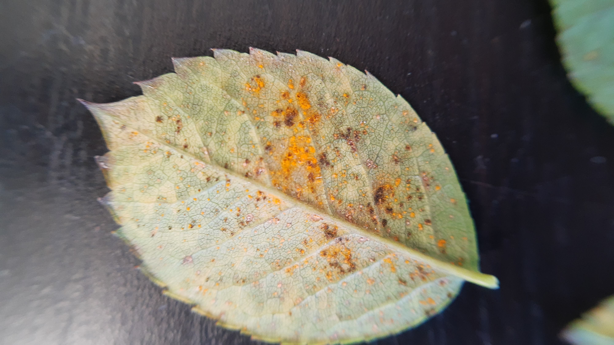

Comprehensive seasonal gardening guide for New Zealand
| Area | Planting Window | Planting Time | Spacing |
|---|---|---|---|
| Northland / Auckland | Jan - Mar | Full sun, warm soil | 45cm |
| Waikato / Bay of Plenty | Feb - Apr | Full sun, warm soil | 45cm |
| East Coast / Canterbury | Mar - May | Protected sites, frost-free | 45cm |
| Central Otago / Otago | Oct - Dec | Greenhouse or sheltered sites | 45cm |
| Southland / Invercargill | Oct - Dec | Greenhouse or sheltered sites | 45cm |
| West Coast – North | Jan - Mar | Full sun, sheltered from wind | 45cm |
| West Coast – South | Feb - Mar | Protected beds, full sun | 45cm |
| Pest / Disease | Signs | IPM Threshold |
|---|---|---|
| Aphids  Clusters on new growth | >10% leaves | |
| Whitefly | Small white insects under leaves | Sticky traps if heavy |
| Blight | Dark lesions on leaves/stems | Remove affected parts |
| Mildew | White powdery coating | Only if widespread |
Soil: Well-drained, fertile pH 6.0-6.8
Light: Full sun
Water: Regular, avoid wetting leaves
| Area | Planting Window | Planting Time | Spacing |
|---|---|---|---|
| Northland / Auckland | Feb - May | Full sun, fertile soil | 30-50cm |
| East Coast / Canterbury | Mar - Jun | Protected sites, fertile soil | 30-50cm |
| Central Otago / Otago | Oct - Dec | Sheltered sites, short season | 30-50cm |
| Southland / Invercargill | Oct - Dec | Sheltered sites, hardy varieties | 30-50cm |
| West Coast – North | Feb - May | Full sun, fertile soil | 30-50cm |
| West Coast – South | Feb - Apr | Partial sun, high rainfall tolerant | 30-50cm |
| Pest / Disease | Signs | IPM Threshold |
|---|---|---|
| White butterfly caterpillars | Leaf holes | >10% leaf damage |
| Aphids | Clusters on leaves | >10% leaves |
| Clubroot | Swollen roots, stunted growth | Remove affected plants |
| Leaf spots | Dark spots on leaves | Only if severe |
Soil: Well-drained, fertile pH 6.0-7.0
Light: Full sun
Water: Keep soil moist
| Area | Planting Window | Planting Time | Spacing |
|---|---|---|---|
| Northland / Auckland | Mar - Aug | Sow 1-2cm deep | 5-10cm |
| East Coast / Canterbury | Mar - Aug | Raised beds / protected rows | 5-10cm |
| Central Otago / Otago | Oct - Dec | Sow in protected or raised beds | 5-10cm |
| Southland / Invercargill | Oct - Dec | Protected beds, frost-prone areas | 5-10cm |
| West Coast – North | Mar - Jul | Sow in full sun, sheltered from rain | 5-10cm |
| West Coast – South | Feb - May | Sow in raised beds, partial sun | 5-10cm |
| Pest / Disease | Signs | IPM Threshold |
|---|---|---|
| Carrot rust fly | Holes in roots | Row covers if >5% |
| Aphids | Clusters on leaves | >10% leaves |
| Damping off | Seedlings collapse | Ensure good drainage |
Soil: Loose, deep, free of stones
Light: Full sun
Water: Evenly moist
Small green insects, cluster on new growth. Action: >10% infestation, spray with soap
Small white insects, under leaves. Action: Use yellow sticky traps if heavy
Chew leaves rapidly. Action: Remove by hand if few, otherwise safe insecticide
Holes in carrot roots. Action: Use row covers or delay sowing.
Dark lesions on leaves/stems of tomatoes. Remove affected parts and rotate crops.
| Area | Pest | Action Threshold |
|---|---|---|
| Northland / Auckland | Caterpillars | 15% leaf damage |
| East Coast / Canterbury | Aphids | 10% infestation |
| Central Otago / Otago | Slugs | 5 per m² |
| Southland / Invercargill | Slugs & Frost | 5 per m² / frost protection advised |
| West Coast – North | Slugs | 5 per m² |
| West Coast – South | Slugs & Wet soils | 5 per m², monitor drainage |
Encourage beneficial insects and tolerate minor damage before chemical use.